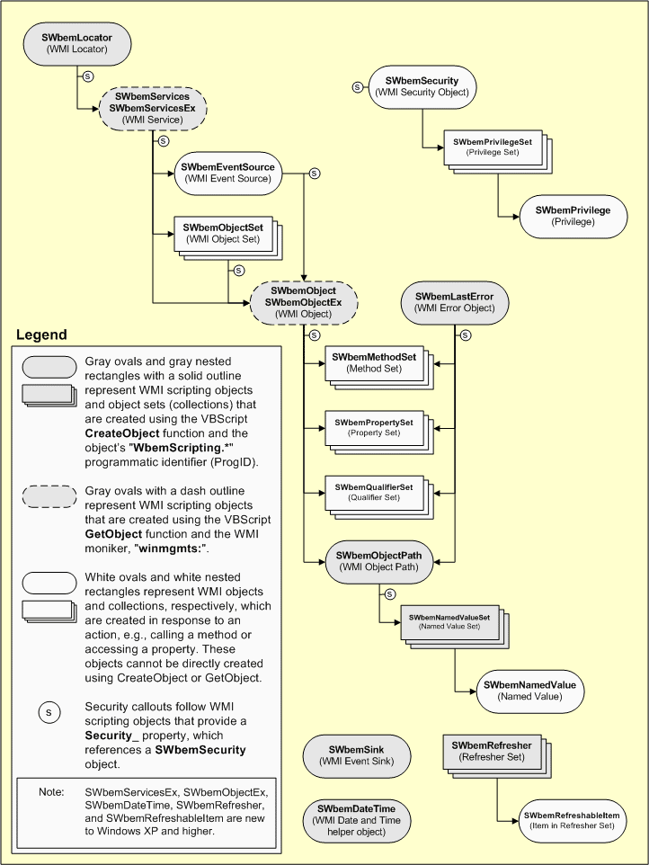

Windows Management Instrumentation (WMI) is used to access management information and instrument resources of a Windows machine. What makes it interesting is that with WMI, you can manage/control components on a Windows machine remotely. Some knowledge of DCOM is helpful as WMI connections are made through DCOM.
This post shows how to instrument Windows resources using WMI and Java. Let's say, you'd like to program starting and stopping services (like SQL Server service, Web Server service etc.,) on a remote machine. Here are some tools that can be used for this purpose:
| Tool | Pros | Cons | License |
| j-interop |
|
|
LGPL |
| JACOB project |
|
|
LGPL |
| j-integra |
|
|
Commercial. May cost anywhere from $400 to $8000 |
My choice is j-interop. The following program in Java uses j-interop library to start/stop services on a remote Windows machine. You can run the program from a Linux machine as j-interop is 100% Java.
WMI in action
This code snippet from MSDN written in VBScript using WMI Scripting Library shows how to retrieve services and stop them.
strComputer = "."
strNamespace = "\root\cimv2"
strClass = "Win32_Service"
Const wbemFlagReturnImmediately = &h10
Const wbemFlagForwardOnly = &h20
Set objSWbemServices = GetObject("winmgmts:\\" & strComputer & strNamespace)
Set colSWbemObjectSet = objSWbemServices.ExecQuery("SELECT * FROM " & strClass, _
"WQL" _
wbemFlagReturnImmediately + wbemFlagForwardOnly)
For Each objSWbemObject in colSWbemObjectSet
objSWbemObject.StopService()
Next

{kind=link}
WMI Scripting Library is single DLL wbemdisp.dll that physically resides in the %SystemRoot%\system32\wbem directory. The library provides a unified object model and a simple API to manage and instrument Windows resources. By that I mean, all resources that can be instrumented, can be managed using the same steps.
The following figure (Fig 1) shows WMI Scripting Library Object Model. The model also shows the sequence of steps to be performed to get hold of a particular resource. Let's go through the steps one at a time.
Step 1
As you can see from the object model, the first step is to connect to WMI service on the target machine. There are 2 ways to connect to WMI:
-
Through WMI moniker
strComputer = "." strNamespace = "\root\cimv2" Set objSWbemServices = GetObject("winmgmts:\\" & strComputer & strNamespace) -
Through SWbemLocator object
strComputer = "." strNamespace = "\root\cimv2" Set objSWbemLocator = CreateObject("WbemScripting.SWbemLocator") Set objSWbemServices = objLocator.ConnectServer(strComputer, strNamespace)
strComputer = "." indicates local machine. To connect to a remote machine, pass the hostname (in addition to username and password).
In Java, using J-Interop you'd write that as:
import static org.jinterop.dcom.impls.JIObjectFactory.narrowObject;
import static org.jinterop.dcom.impls.automation.IJIDispatch.IID;
JISession dcomSession = JISession.createSession(domain, user, pass);
JIComServer comServer = new JIComServer(valueOf("WbemScripting.SWbemLocator"), hostname, dcomSession);
IJIDispatch wbemLocator = (IJIDispatch) narrowObject(comServer.createInstance().queryInterface(IID));
Object[] params = new Object[] {
new JIString(hostname),
new JIString("ROOT\\CIMV2"),
JIVariant.OPTIONAL_PARAM(),
JIVariant.OPTIONAL_PARAM(),
JIVariant.OPTIONAL_PARAM(),
JIVariant.OPTIONAL_PARAM(),
new Integer(0),
JIVariant.OPTIONAL_PARAM()
};
JIVariant results[] = wbemLocator.callMethodA("ConnectServer", params);
IJIDispatch wbemServices = (IJIDispatch) narrowObject(results[0].getObjectAsComObject());
The SWbemLocator.ConnectServer method gives us a reference to SWbemServices object that represents a connection to a namespace on either a local computer or a remote host computer. You can then use the methods of the SWbemServices object to access WMI.
Step 2
Once you obtain a reference to the SWbemServices object, you can invoke one of the methods this class exposes depending on what you want to accomplish. For example, to retrieve Windows services, you can invoke SWbemServices.InstancesOf method as show below in VBScript:
Set colSWbemObjectSet = objSWbemServices.InstancesOf("Win32_Service")
In Java (see ListServices.java in the attached source code):
import static org.jinterop.dcom.impls.JIObjectFactory.narrowObject;
params = new Object[] {
new JIString("Win32_Service"),
new Integer(0),
JIVariant.OPTIONAL_PARAM()
};
JIVariant[] servicesSet = wbemServices.callMethodA("InstancesOf", params);
IJIDispatch wbemObjectSet = (IJIDispatch) narrowObject(servicesSet[0].getObjectAsComObject());
The method SWbemServices.InstancesOf returns all instances of a managed resource. To selectively retrieve a subset of resources, you can use the SWbemServices.ExecQuery method which takes a WQL (WMI Query Language) query as shown below.
Const wbemFlagReturnImmediately = &h10
Const wbemFlagForwardOnly = &h20
Set colSWbemObjectSet = objSWbemServices.ExecQuery("SELECT * FROM Win32_Service WHERE State = 'Stopped'", _
"WQL" _
wbemFlagReturnImmediately + wbemFlagForwardOnly)
In Java that would be:
import static org.jinterop.dcom.impls.JIObjectFactory.narrowObject;
final int RETURN_IMMEDIATE = 0x10;
final int FORWARD_ONLY = 0x20;
params = new Object[] {
new JIString("SELECT * FROM Win32_Service WHERE State = 'Stopped'"),
JIVariant.OPTIONAL_PARAM(),
new JIVariant(new Integer(RETURN_IMMEDIATE + FORWARD_ONLY))
};
JIVariant[] servicesSet = wbemServices.callMethodA("ExecQuery", params);
IJIDispatch wbemObjectSet = (IJIDispatch) narrowObject(servicesSet[0].getObjectAsComObject());
Note that both methods SWbemServices.InstancesOf and SWbemServices.ExecQuery always return a collection of zero or more items represented by SWbemObjectSet object. The wbemFlagReturnImmediately causes the call to return immediately whereas wbemFlagForwardOnly creates a uni-directional iterator.
Step 3
Now the final step. Since our query was to retrieve instances of Win32_Service, each object in the collection returned will be an an object of Win32_Service class. To manage a given service, you just have to invoke the appropriate methods. For example to stop a service in VBScript:
For Each objSWbemObject in colSWbemObjectSet
objSWbemObject.StopService()
Next
It takes a few more lines in Java:
import static org.jinterop.dcom.impls.JIObjectFactory.narrowObject;
JIVariant newEnumvariant = wbemObjectSet.get("_NewEnum");
IJIComObject enumComObject = newEnumvariant.getObjectAsComObject();
IJIEnumVariant enumVariant = (IJIEnumVariant) narrowObject(enumComObject.queryInterface(IJIEnumVariant.IID));
Object[] elements = enumVariant.next(1);
JIArray aJIArray = (JIArray) elements[0];
JIVariant[] array = (JIVariant[]) aJIArray.getArrayInstance();
for (JIVariant variant : array) {
IJIDispatch wbemObjectDispatch = (IJIDispatch) narrowObject(variant.getObjectAsComObject());
JIVariant returnStatus = wbemObjectDispatch.callMethodA("StopService");
System.out.println(returnStatus.getObjectAsInt());
}
The property _NewEnum is used to enumerate wbemObjectSet collection one object at a time.
Putting it all together
With the 3 steps described above, we can now write a class called SimpleServiceManager that can start and stop a service on a remote machine. Fill in the domain, hostname, username and password and pass service name (not the display name) to start() or stop() a service.
import static org.jinterop.dcom.core.JIProgId.valueOf;
import static org.jinterop.dcom.impls.JIObjectFactory.narrowObject;
import static org.jinterop.dcom.impls.automation.IJIDispatch.IID;
import java.util.logging.Level;
import org.jinterop.dcom.common.JISystem;
import org.jinterop.dcom.core.IJIComObject;
import org.jinterop.dcom.core.JIArray;
import org.jinterop.dcom.core.JIComServer;
import org.jinterop.dcom.core.JISession;
import org.jinterop.dcom.core.JIString;
import org.jinterop.dcom.core.JIVariant;
import org.jinterop.dcom.impls.automation.IJIDispatch;
import org.jinterop.dcom.impls.automation.IJIEnumVariant;
/**
* Manages Windows services using WMI API.
*
* @version $Revision: 1.2 $
* @author $Author: vijaykandy $
*/
public class SimpleServiceManager {
private static final int STOP = 0;
private static final int START = 1;
/**
* Driver.
*
* @param args
*/
public static void main(String[] args) {
String domain = "";
String hostname = "";
String username = "";
String password = "";
// We'll start 'Event Log' service.
// Note: Display name is "Event Log" where as service name is "Eventlog"
SimpleServiceManager manager = new SimpleServiceManager();
manager.stop(domain, hostname, username, password, "Eventlog");
}
/**
* Starts a given service if its stopped.
*
* @param domain
* @param hostname
* @param username
* @param password
* @param serviceName
*/
public void start(String domain, String hostname, String username, String password, String serviceName) {
manageService(domain, hostname, username, password, serviceName, START);
}
/**
* Stops a given service if its running.
*
* @param domain
* @param hostname
* @param username
* @param password
* @param serviceName
*/
public void stop(String domain, String hostname, String username, String password, String serviceName) {
manageService(domain, hostname, username, password, serviceName, STOP);
}
/**
* Starts/Stops a given service by connecting to the machine identified by
* hostname.
*
*
* NOTE: serviceName is the display name of the service.
*
* @param domain
* @param hostname
* @param username
* @param password
* @param serviceName
* @param action
*/
public void manageService(String domain, String hostname, String username, String password, String serviceName,
int action) {
if (action != START && action != STOP) {
return;
}
JISession dcomSession = null;
try {
dcomSession = init(domain, username, password);
JIComServer comServer = new JIComServer(valueOf("WbemScripting.SWbemLocator"), hostname, dcomSession);
IJIDispatch wbemLocator = (IJIDispatch) narrowObject(comServer.createInstance().queryInterface(IID));
Object[] params = new Object[] {
new JIString(hostname),
new JIString("ROOT\\CIMV2"),
JIVariant.OPTIONAL_PARAM(),
JIVariant.OPTIONAL_PARAM(),
JIVariant.OPTIONAL_PARAM(),
JIVariant.OPTIONAL_PARAM(),
new Integer(0),
JIVariant.OPTIONAL_PARAM()
};
JIVariant results[] = wbemLocator.callMethodA("ConnectServer", params);
IJIDispatch wbemServices = (IJIDispatch) narrowObject(results[0].getObjectAsComObject());
final int RETURN_IMMEDIATE = 0x10;
final int FORWARD_ONLY = 0x20;
params = new Object[] {
new JIString("SELECT * FROM Win32_Service WHERE Name = '" + serviceName + "'"),
JIVariant.OPTIONAL_PARAM(),
new JIVariant(new Integer(RETURN_IMMEDIATE + FORWARD_ONLY))
};
JIVariant[] servicesSet = wbemServices.callMethodA("ExecQuery", params);
IJIDispatch wbemObjectSet = (IJIDispatch) narrowObject(servicesSet[0].getObjectAsComObject());
JIVariant newEnumvariant = wbemObjectSet.get("_NewEnum");
IJIComObject enumComObject = newEnumvariant.getObjectAsComObject();
IJIEnumVariant enumVariant = (IJIEnumVariant) narrowObject(enumComObject.queryInterface(IJIEnumVariant.IID));
Object[] elements = enumVariant.next(1);
JIArray aJIArray = (JIArray) elements[0];
JIVariant[] array = (JIVariant[]) aJIArray.getArrayInstance();
for (JIVariant variant : array) {
IJIDispatch wbemObjectDispatch = (IJIDispatch) narrowObject(variant.getObjectAsComObject());
// Print object as text. Optional - comment if not needed
JIVariant[] v = wbemObjectDispatch.callMethodA("GetObjectText_", new Object[] { 1 });
System.out.println(v[0].getObjectAsString().getString());
// Start or Stop the servie
String methodToInvoke = (action == START) ? "StartService" : "StopService";
JIVariant returnStatus = wbemObjectDispatch.callMethodA(methodToInvoke);
// Print out the meaning out return code
System.out.println(ErrorCodes.SERVICE_ERRORS.get(returnStatus.getObjectAsInt()));
}
} catch (Exception e) {
e.printStackTrace();
} finally {
if (dcomSession != null) {
try {
JISession.destroySession(dcomSession);
} catch (Exception ex) {
ex.printStackTrace();
}
}
}
}
/**
* Retrieve a session.
*
* @param domain
* @param user
* @param pass
* @return
* @throws Exception
*/
private static JISession init(String domain, String user, String pass) throws Exception {
JISystem.getLogger().setLevel(Level.OFF);
JISystem.setAutoRegisteration(true);
JISession dcomSession = JISession.createSession(domain, user, pass);
dcomSession.useSessionSecurity(true);
return dcomSession;
}
}
Download source
The attached source code has 3 programs:PrintInstances.javaprints all instances of a given class. For e.g., to retrieve a list of services useWin32_Servicein WML.SimpleServiceManager.javastarts or stops a given service.ServiceManager.javastarts or stops a service by starting/stopping any dependents.